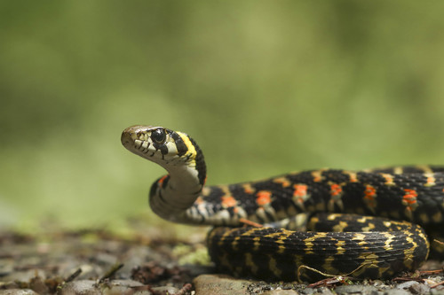
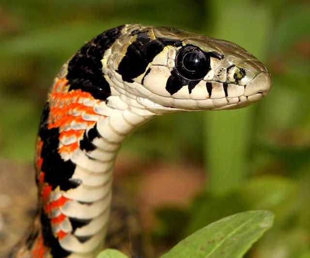
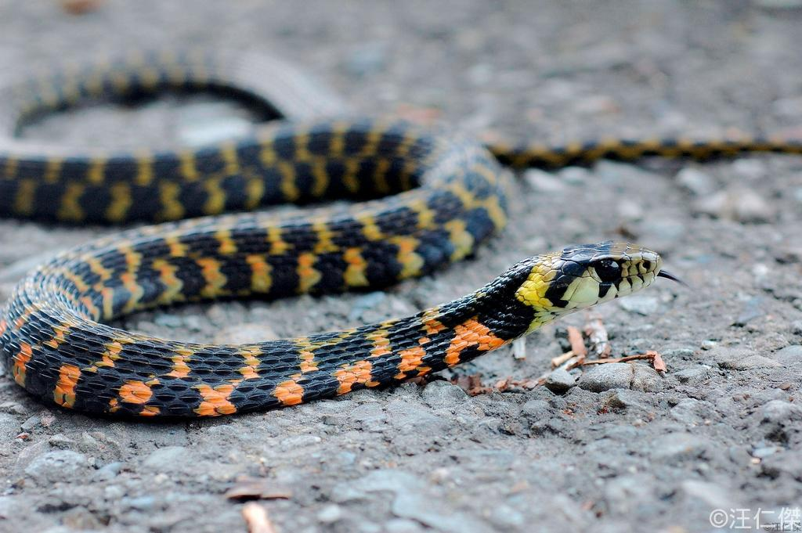
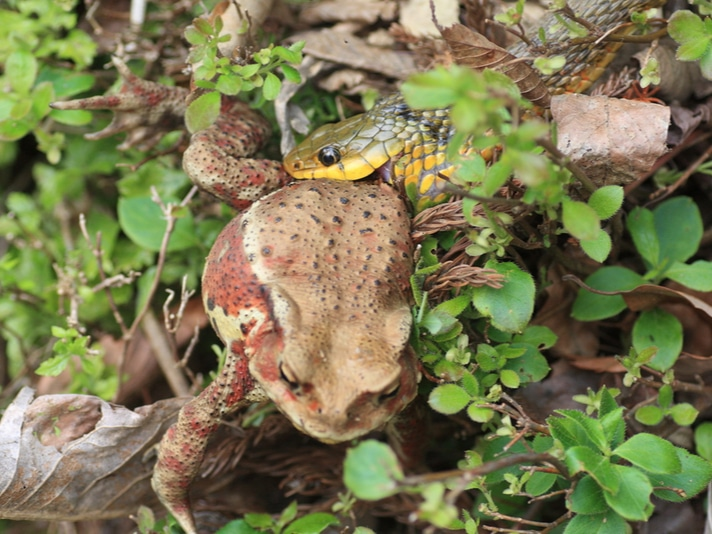

The tiger keelback (Rhabdophis tigrinus) is a mildly venomous colubrid snake found in East Asia. It has a greenish body with black and orange bands and is unique for both producing venom and accumulating toxins from poisonous toads
When threatened, it flattens its neck to expose toxin-storing nuchal glands. Found near water sources, it primarily preys on amphibians
Though venomous, it is generally non-aggressive and rarely poses a threat to humans unless handled carelessly.
Its ability to sequester toxins from its diet makes it one of the few snakes with both offensive and defensive venom strategies.
Due to habitat loss and human activities, its population faces some threats, though it is not currently endangered.

Physical Characteristics
The tiger keelback (Rhabdophis tigrinus) is a medium-sized snake, typically growing between 60 to 100 cm in length.
It has a slender body with keeled (ridged) scales that give it a rough texture. Its coloration varies but generally features a greenish or olive body with distinct black and orange or reddish bands along its back, resembling a tiger’s pattern.
The head is slightly wider than the neck, and it has large eyes with round pupils.
One of its unique physical features is the presence of nuchal glands located behind the head, which store toxins acquired from its diet of poisonous toads.
These glands appear as slightly raised, swollen areas on the neck.
The tiger keelback’s appearance serves as a warning to predators, signaling its toxic nature.

Habitat
The tiger keelback (Rhabdophis tigrinus) is typically found in moist, temperate, and subtropical environments across East Asia, including Japan, China, Taiwan, and parts of Southeast Asia.
It prefers habitats near water sources such as wetlands, marshes, rice paddies, ponds, and slow-moving streams, as these areas provide an abundant supply of amphibian prey.
This snake is semi-aquatic and is often seen swimming or hiding among vegetation near water.
It can also adapt to grasslands, forests, and agricultural fields, as long as there is sufficient humidity and access to prey.
Although it is commonly found at lower elevations, it can inhabit mountainous regions as well. Due to its reliance on amphibians for food, the tiger keelback’s distribution is closely linked to the presence of toads and other small amphibians.

Diet and Behavior
The tiger keelback (Rhabdophis tigrinus) primarily feeds on amphibians, especially poisonous toads, from which it absorbs toxins into its nuchal glands for defense.
It also consumes small fish, frogs, and occasionally invertebrates.
This snake is both diurnal and semi-aquatic, often found near water, where it hunts its prey.
Unlike many venomous snakes that rely on quick strikes, the tiger keelback subdues its prey using a combination of mild venom and physical restraint.
Despite its toxic nature, it is generally non-aggressive and avoids confrontation.
However, when threatened, it flattens its neck to expose the toxin-storing glands as a warning display. If provoked further, it may bite, though envenomation in humans is rare.

Bite & Jaw Mechanism
The tiger keelback (Rhabdophis tigrinus) possesses a unique bite and jaw mechanism compared to many other venomous snakes.
It is a rear-fanged (opisthoglyphous) species, meaning its venomous fangs are located at the back of its upper jaw.
To deliver venom effectively, the snake must chew on its prey, allowing venom to flow through specialized grooves in the fangs.
This slow envenomation process differs from front-fanged vipers, which deliver venom through quick strikes.
The venom contains anticoagulant properties, which can cause prolonged bleeding in victims.
While generally harmless to humans, bites can lead to mild to moderate symptoms, and severe cases are rare.
The tiger keelback’s primary defense, however, comes from its ability to store toxins from consumed toads, making it both venomous and toxic—an unusual trait among snakes.